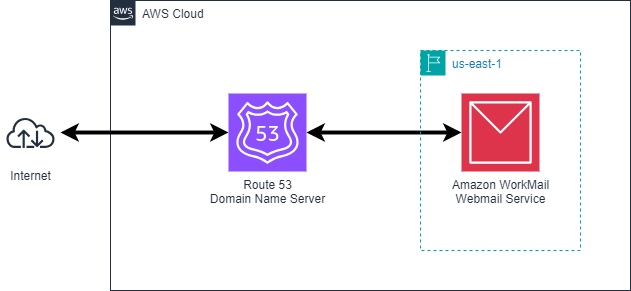

Here are a selection of the projects that I have been involved in, the architecture and technology used. Click on the thumbnail to see details.
| Project | Thumbnail | Description |
|---|---|---|
| Static website |

|
This website is hosted as a static website in an Amazon S3 bucket and published via an Amazon CloudFront distribution. The domain name is managed by Amazon Route 53 with SSL certificate issued by AWS Certificate Manager. The deployment is managed by GitHub Actions uploading code to the S3 bucket after code is committed to the GitHub repository. |
| Workmail |  | Amazon WorkMail is a managed email and calendar service that offers strong security controls and support for desktop and mobile clients. It uses the domain and hosted zone created for the static website. |
Cloud Resume Challenge Part 1 |

|
The Cloud Resume Challenge is a guided project to generate a resume webpage hosted in the cloud using cloud resources and development best practices. Part 1 is to build a static webpage and then add a back-end to store a count of visitors that can be displayed on the page. |